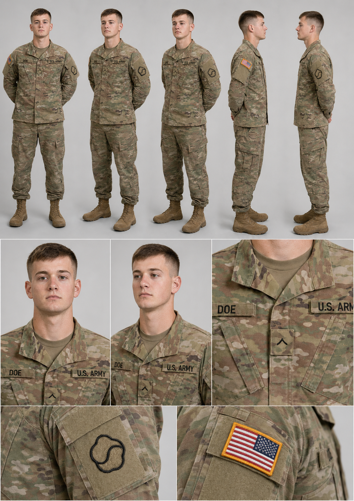
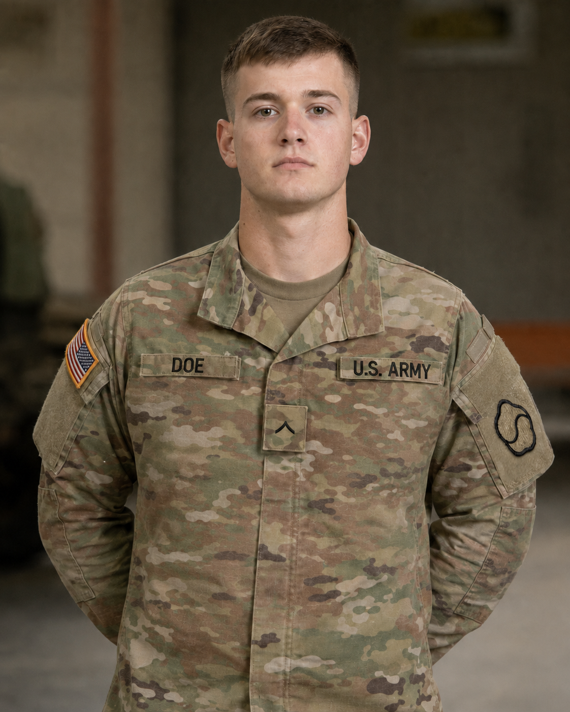
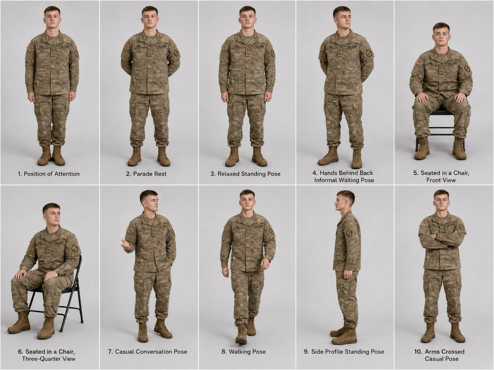
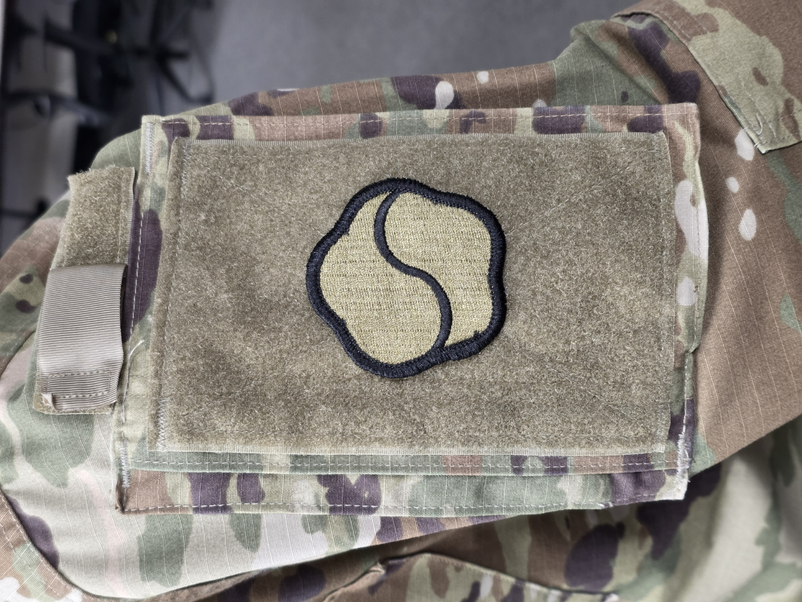
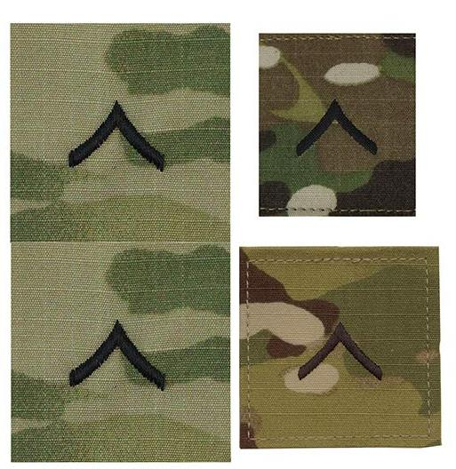
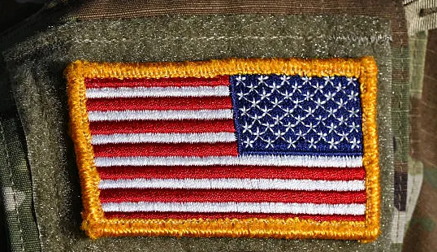

Export Note
This project is building a consistent set of AI-generated visual references and scene prompts for a SOFA in Korea legal information video. The goal is to use one fictional Soldier, PV2 John Doe, as a recurring example character across the video so the visuals feel connected, professional, and easy to follow. This archive keeps the final reference images, master prompt, scene prompts, and production notes in one place for quick use while editing.
Final 3 Reference Images
These are the three final images used to keep PV2 John Doe consistent. Image A shows who he is, what his uniform looks like, and how his patches should appear. Image B is the close-up face reference. Image C shows example body positions, but it is only a guide for natural posture and movement.



Most Recent Prompts Used to Create Images A, B, and C
These are the final working prompt versions for the three-reference-image system. The Image B prompt below is now written as a fresh portrait-generation prompt, not an edit or cleanup prompt. Image A remains the primary character sheet prompt, and Image C remains the combined 10-pose reference sheet prompt.
Image B Prompt - Close-Up Portrait Generation Prompt
IMAGE GENERATION TASK — GENERATE THE IMAGE NOW. FINAL OUTPUT REQUIRED: Generate one high-resolution photorealistic close-up or medium close-up Army public affairs portrait of PV2 John Doe. Purpose: Create a portrait that matches the established PV2 DOE character as closely as possible. This is a new image-generation prompt, not an edit prompt. The result should look like a natural official U.S. Army portrait taken indoors, with realistic lighting, fabric, stitching, patches, and name tapes. REFERENCE IMAGES TO USE: Image F is the exact 19th ESC shoulder patch reference. Use Image F to recreate the subdued 19th ESC patch design, patch shape, tan fill, black embroidered outer border, black internal curved line, embroidery texture, patch thickness, and correct centered placement on the left shoulder Velcro panel. Image G is the PV2 rank reference. Use Image G to create one subdued black PV2 chevron on the center chest rank tab. The chevron must be simple, accurate, centered, and not confused with another rank. Image H is the U.S. flag patch reference. Use Image H only for the right shoulder flag patch if the flag is visible in the portrait. The flag should be full color, embroidered, bordered in gold, and positioned on the Soldier’s right shoulder with the star field facing forward. CHARACTER DESCRIPTION: PV2 John Doe is a fictional young white male U.S. Army Soldier, approximately 18 years old, assigned to the 19th Expeditionary Sustainment Command. He has short brown hair in a conservative tapered military haircut, a clean-shaven face, a realistic junior-enlisted build, and a calm neutral professional expression. He should look like a normal young Soldier, not a model, not special operations, and not a cinematic action character. UNIFORM REQUIREMENTS: PV2 John Doe wears the current U.S. Army ACU in OCP camouflage. Preserve a realistic Army blouse layout: - wearer’s right chest: DOE name tape - wearer’s left chest: U.S. ARMY tape - center chest: PV2 rank tab with one subdued black chevron - left shoulder: subdued 19th ESC patch, centered and upright on the rectangular Velcro panel - right shoulder: full-color reverse U.S. flag patch, if visible - tan 499/coyote undershirt - realistic OCP fabric weave, stitching, Velcro, collar, seams, and shoulder pockets - clean front blouse area below the name tapes without incorrect vertical nipple-area pocket flaps COMPOSITION: Create a close-up or medium close-up portrait from roughly upper chest to head, similar to a professional Army public affairs portrait. PV2 John Doe faces the camera directly or with a very slight natural angle. Keep the face clear and sharp. The image should be wide enough, when possible, to show the DOE name tape, U.S. ARMY tape, PV2 rank tab, right shoulder U.S. flag, and left shoulder 19th ESC patch. BACKGROUND AND STYLE: Use a realistic indoor military facility background with soft blur, neutral colors, and natural lighting. The image should feel like an official but natural public affairs portrait. Use realistic depth of field. Avoid dramatic cinematic lighting, exaggerated contrast, stylized color grading, or artificial hero posing. TEXT ACCURACY: Only render readable text if it can be clean and accurate. The only visible uniform text should be DOE and U.S. ARMY. Do not generate random text, misspelled name tapes, fake badges, fake signs, or extra unit labels. NEGATIVE INSTRUCTIONS: clean-shaven appearance, rank, uniform layout, shoulder patch placement, or overall junior-enlisted appearance. Do not make him older, more muscular, heroic, tactical, or special operations. Do not add weapons, body armor, helmet, sunglasses, gloves, beard, tattoos, ribbons, medals, qualification badges, airborne tabs, combat patches, extra shoulder patches, or awards. Do not use UCP, woodland camouflage, MARPAT, ABU, black boots, or incorrect camouflage. Do not tilt, rotate, shrink, distort, or move the 19th ESC patch. Do not replace the PV2 chevron with another rank. Do not create the incorrect vertical chest pocket/flap shapes below the name tapes.
Image A Prompt - Primary Reference Sheet with Patrol Cap Panels
IMAGE GENERATION TASK — GENERATE THE IMAGE NOW. FINAL OUTPUT REQUIRED: Generate one high-resolution photorealistic updated PRIMARY CHARACTER REFERENCE SHEET for PV2 John Doe. Purpose: Create a new Image A that preserves John Doe's identity and corrected uniform details while adding patrol cap reference views for future outdoor scene generation. REFERENCE IMAGES TO USE: Image A is the current corrected primary character reference sheet. Use it as the primary identity, full-body, and uniform reference. Preserve the same face, age, haircut, skin tone, facial structure, build, youthful junior-enlisted look, OCP uniform layout, DOE tape, U.S. ARMY tape, PV2 rank, corrected 19th ESC patch, U.S. flag, full-body proportions, and uniform realism. Image B is the corrected close-up portrait reference. Use it as a secondary face and portrait realism reference. Preserve the same face, expression style, haircut, skin texture, youthful appearance, professional neutral bearing, and corrected 19th ESC patch visible on the left shoulder. PATROL CAP: Add reference panels showing PV2 John Doe wearing the standard U.S. Army patrol cap. The patrol cap must be OCP pattern, properly fitted, naturally worn, not oversized, not tilted, and not stylized. If the cap rank is visible, show one subdued black PV2 chevron centered on the front rank tab. OUTPUT FORMAT: Create one clean photorealistic character reference sheet on a neutral light gray studio background. Maximum of 10 panels total. NO HEADGEAR PANELS: 1. Full-body front standing view without patrol cap 2. Full-body left three-quarter standing view without patrol cap 3. Full-body right three-quarter standing view without patrol cap 4. Left profile standing view without patrol cap 5. Chest / upper torso detail without patrol cap showing DOE, U.S. ARMY, and PV2 rank PATROL CAP PANELS: 6. Full-body front standing view wearing patrol cap 7. Full-body left three-quarter standing view wearing patrol cap 8. Full-body right three-quarter standing view wearing patrol cap 9. Close-up front portrait wearing patrol cap 10. Slight three-quarter close-up portrait wearing patrol cap NEGATIVE INSTRUCTIONS: Do not change his identity, face, age, haircut, build, rank, patch placement, or uniform. Do not create different Soldiers between panels. Do not make the patrol cap incorrect, oversized, malformed, or unnaturally worn.
Image C Prompt - Combined 10-Pose Character Pose Sheet
IMAGE GENERATION TASK — GENERATE THE IMAGE NOW. FINAL OUTPUT REQUIRED: Generate one high-resolution photorealistic corrected 10-POSE CHARACTER POSE SHEET for PV2 John Doe. REFERENCE IMAGES TO USE: Image A is the updated corrected primary character reference sheet. Use it as the main full-body and uniform reference. Image B is the updated corrected close-up portrait reference. Use it as the secondary identity and portrait realism reference. Preserve the same face, age, haircut, skin tone, facial structure, build, OCP uniform, DOE tape, U.S. ARMY tape, PV2 rank, corrected 19th ESC patch, U.S. flag, and overall junior-enlisted appearance. OUTPUT FORMAT: Create one clean photorealistic character pose sheet on a neutral light gray studio background. The sheet must contain 10 panels showing the same Soldier in the following poses: 1. Position of Attention 2. Parade Rest 3. Relaxed Standing Pose 4. Hands Behind Back Informal Waiting Pose 5. Seated in a Chair, Front View 6. Seated in a Chair, Three-Quarter View 7. Casual Conversation Pose 8. Walking Pose 9. Side Profile Standing Pose 10. Arms Crossed Casual Pose LAYOUT: Arrange all 10 poses in one clean organized sheet with consistent studio background and neat spacing. Show full body from head to boots whenever appropriate. For seated poses, include a simple neutral chair. Keep all poses realistic, useful, and clear. NEGATIVE INSTRUCTIONS: Do not change his identity, face, age, haircut, rank, uniform layout, patch placement, or sleeve placement. Do not make any panel look like a different Soldier. Do not create inconsistent face shapes or patch placement between panels. Do not add extra badges, weapons, tactical gear, helmet, body armor, or wrong camouflage.
Image B Prompt - Close-Up Portrait Generation Prompt
Use this section to generate the finished PV2 John Doe close-up portrait from scratch as closely as possible. The portrait below is the target look. The patch, rank, and flag references are included in a closed dropdown so they are available without taking over the page.
Reference Images F, G, and H
These references should stay closed by default. Open them only when you need to confirm patch, rank, or flag details.



Image B Prompt - Close-Up Portrait Generation Prompt
IMAGE GENERATION TASK — GENERATE THE IMAGE NOW. FINAL OUTPUT REQUIRED: Generate one high-resolution photorealistic close-up or medium close-up Army public affairs portrait of PV2 John Doe. Purpose: Create a portrait that matches the established PV2 DOE character as closely as possible. This is a new image-generation prompt, not an edit prompt. The result should look like a natural official U.S. Army portrait taken indoors, with realistic lighting, fabric, stitching, patches, and name tapes. REFERENCE IMAGES TO USE: Image F is the exact 19th ESC shoulder patch reference. Use Image F to recreate the subdued 19th ESC patch design, patch shape, tan fill, black embroidered outer border, black internal curved line, embroidery texture, patch thickness, and correct centered placement on the left shoulder Velcro panel. Image G is the PV2 rank reference. Use Image G to create one subdued black PV2 chevron on the center chest rank tab. The chevron must be simple, accurate, centered, and not confused with another rank. Image H is the U.S. flag patch reference. Use Image H only for the right shoulder flag patch if the flag is visible in the portrait. The flag should be full color, embroidered, bordered in gold, and positioned on the Soldier’s right shoulder with the star field facing forward. CHARACTER DESCRIPTION: PV2 John Doe is a fictional young white male U.S. Army Soldier, approximately 18 years old, assigned to the 19th Expeditionary Sustainment Command. He has short brown hair in a conservative tapered military haircut, a clean-shaven face, a realistic junior-enlisted build, and a calm neutral professional expression. He should look like a normal young Soldier, not a model, not special operations, and not a cinematic action character. UNIFORM REQUIREMENTS: PV2 John Doe wears the current U.S. Army ACU in OCP camouflage. Preserve a realistic Army blouse layout: - wearer’s right chest: DOE name tape - wearer’s left chest: U.S. ARMY tape - center chest: PV2 rank tab with one subdued black chevron - left shoulder: subdued 19th ESC patch, centered and upright on the rectangular Velcro panel - right shoulder: full-color reverse U.S. flag patch, if visible - tan 499/coyote undershirt - realistic OCP fabric weave, stitching, Velcro, collar, seams, and shoulder pockets - clean front blouse area below the name tapes without incorrect vertical nipple-area pocket flaps COMPOSITION: Create a close-up or medium close-up portrait from roughly upper chest to head, similar to a professional Army public affairs portrait. PV2 John Doe faces the camera directly or with a very slight natural angle. Keep the face clear and sharp. The image should be wide enough, when possible, to show the DOE name tape, U.S. ARMY tape, PV2 rank tab, right shoulder U.S. flag, and left shoulder 19th ESC patch. BACKGROUND AND STYLE: Use a realistic indoor military facility background with soft blur, neutral colors, and natural lighting. The image should feel like an official but natural public affairs portrait. Use realistic depth of field. Avoid dramatic cinematic lighting, exaggerated contrast, stylized color grading, or artificial hero posing. TEXT ACCURACY: Only render readable text if it can be clean and accurate. The only visible uniform text should be DOE and U.S. ARMY. Do not generate random text, misspelled name tapes, fake badges, fake signs, or extra unit labels. NEGATIVE INSTRUCTIONS: clean-shaven appearance, rank, uniform layout, shoulder patch placement, or overall junior-enlisted appearance. Do not make him older, more muscular, heroic, tactical, or special operations. Do not add weapons, body armor, helmet, sunglasses, gloves, beard, tattoos, ribbons, medals, qualification badges, airborne tabs, combat patches, extra shoulder patches, or awards. Do not use UCP, woodland camouflage, MARPAT, ABU, black boots, or incorrect camouflage. Do not tilt, rotate, shrink, distort, or move the 19th ESC patch. Do not replace the PV2 chevron with another rank. Do not create the incorrect vertical chest pocket/flap shapes below the name tapes.
Final 3-Image Scene Generation Master Prompt
IMAGE GENERATION TASK — GENERATE THE IMAGE NOW. Use the attached reference images to create one high-resolution photorealistic image of PV2 John Doe, a fictional 18-year-old U.S. Army Soldier assigned to the 19th Expeditionary Sustainment Command. REFERENCE IMAGES: Image A is the primary identity, full-body, and uniform reference for PV2 John Doe. Use Image A to preserve PV2 John Doe’s face, age, haircut, skin tone, build, OCP uniform layout, DOE name tape, U.S. ARMY tape, PV2 rank, corrected 19th ESC patch placement, U.S. flag placement, patrol cap appearance, and overall appearance. Image A also includes patrol cap reference views. Use Image A to preserve how PV2 John Doe looks both: - without headgear - wearing the patrol cap Do not redesign him. Do not make him look like a different person. Do not make him look older. Do not make him look more muscular. Do not make him look like a special operations Soldier or cinematic action hero. He must remain recognizably the same fictional Soldier shown in Image A. Image B is the close-up face and portrait reference. Use Image B to preserve his facial structure, haircut, skin texture, youthful appearance, neutral professional expression, and close-up realism. Use Image B as a secondary face reference only. If there is any conflict, Image A remains the primary identity and uniform reference. Image C is a loose pose and body-language reference only. Use Image C to understand his body proportions, military bearing, seated posture, standing posture, and walking posture. Do not copy any pose exactly unless the scene specifically requests it. Do not copy the numbered layout, panel lines, gray background, or pose-sheet formatting. Do not turn the final image into a character sheet. Use Image C only as loose pose guidance, not as a strict pose lock. CHARACTER: PV2 John Doe is a young white male Soldier, approximately 18 years old. He is clean-shaven. He has short brown hair in a conservative military haircut. He has a realistic junior enlisted appearance. He should look calm, respectful, professional, and approachable. He should look like a normal Soldier fresh out of initial training. UNIFORM: He wears the current U.S. Army ACU in OCP. Preserve the corrected uniform layout from Images A and B: - wearer’s right chest name tape: DOE - wearer’s left chest branch tape: U.S. ARMY - center chest rank tab: one subdued black PV2 chevron - left shoulder: subdued 19th ESC patch, centered and upright on the Velcro panel - right shoulder: full-color reverse U.S. flag patch, star field facing forward - tan 499/coyote undershirt - realistic OCP fabric - realistic stitching - realistic Velcro - slanted chest pockets - shoulder pockets - natural military fit - coyote brown combat boots if visible HEADGEAR RULE: If the scene is outdoors, in transit, in the field, or otherwise appropriate for outdoor military wear, PV2 John Doe may wear his patrol cap. If the scene is indoors in a normal office, briefing room, conference room, classroom, hallway, or similar indoor setting, do not put him in the patrol cap unless specifically instructed. When headgear is appropriate, use the patrol cap appearance shown in Image A. PATROL CAP RULE: If the patrol cap is shown, it must be: - standard U.S. Army patrol cap - OCP pattern - properly fitted - worn naturally and correctly - not oversized - not tilted unnaturally - not stylized If rank is visible on the patrol cap, it must show: - one subdued black PV2 chevron - centered correctly on the front rank tab - realistic embroidery appearance SCENE: [INSERT SCENE DESCRIPTION HERE] COMPOSITION: [INSERT COMPOSITION HERE] POSE DIRECTION: Choose a natural, realistic pose that fits the situation, environment, and mood of the scene. Do not force PV2 John Doe into a pose from Image C unless an exact pose is specifically requested. Use Image C only as loose guidance for realistic posture, body proportions, and military bearing. STYLE: Photorealistic official Army public affairs style. Natural realistic lighting. Believable environment. Clean editorial stock-photo look. Professional military bearing. No dramatic cinematic color grading. No exaggerated emotion. No fake readable background text. TEXT ACCURACY: Only render DOE and U.S. ARMY if the text can be clean and accurate. Do not generate random text, fake signs, fake labels, fake name tapes, or fake unit names. NEGATIVE INSTRUCTIONS: Do not change his identity, face, age, haircut, rank, uniform layout, patch placement, sleeve placement, or overall appearance. Do not make him older. Do not make him more muscular. Do not make him look special operations. Do not make him look cinematic. Do not make him look scared, guilty, angry, arrested, or distressed unless specifically requested. Do not move the 19th ESC patch to the wrong sleeve. Do not place the 19th ESC patch off-center. Do not tilt or rotate the 19th ESC patch. Do not move the U.S. flag to the wrong sleeve. Do not add a combat patch. Do not add badges, tabs, medals, ribbons, awards, deployment patches, qualification badges, airborne tabs, weapons, body armor, gloves, sunglasses, helmets, or tactical gear unless specifically requested. Do not use UCP. Do not use woodland camouflage. Do not use MARPAT. Do not use ABU. Do not use black boots. Do not create a character sheet unless specifically requested. Do not copy the pose-sheet layout from Image C. Do not make the patrol cap incorrect, oversized, malformed, or unnaturally worn. Do not create a different face when the patrol cap is worn.
Scene Presets 18 scenes
Use these inside the master prompt by replacing SCENE and COMPOSITION.
Scene 1: SOFA Intro / Legal Office Brief
Scene
PV2 John Doe is seated in a professional U.S. Army legal office conference room in South Korea, receiving a SOFA information brief. A military legal advisor is visible in the room, slightly out of focus, standing near a blank presentation screen. On the conference table are a notepad, pen, legal folder, and small U.S. and Republic of Korea desk flags. The environment should feel official, calm, educational, and reassuring. This is not a crime scene, not an interrogation, and not a courtroom.
Composition
16:9 horizontal image. Medium shot of PV2 John Doe seated at the conference table, facing slightly toward the legal advisor while his face remains visible to the viewer. Keep PV2 John Doe in sharp focus and the background softly blurred. Leave clean empty space on the left side of the frame for video text overlay.
Scene 2: Who SOFA Applies To
Scene
PV2 John Doe walks on a clean U.S. military installation in South Korea with a small group representing different SOFA-covered personnel: one DoD civilian in business casual clothing, one invited contractor with a laptop bag, and one family member. The scene should feel inclusive, calm, and informational.
Composition
16:9 horizontal image. PV2 John Doe should be the visual anchor in the foreground or middle of the group. Leave space on one side for text overlay.
Scene 3: If an Incident Happens
Scene
PV2 John Doe stands calmly outside a modern Korean police station with a U.S. military representative nearby. The scene should suggest the beginning of a legal administrative process after an alleged incident. He is not arrested, not handcuffed, not distressed, and not being treated like a criminal.
Composition
16:9 horizontal image. Medium-wide shot with PV2 John Doe and the representative in the foreground. Avoid readable signs. Leave space on one side for text overlay.
Scene 4: KNP Report or Subpoena
Scene
PV2 John Doe is seated at a professional office desk in South Korea while an official-looking document is handed to him across the table. The document represents an incident report or subpoena, but all document text must be blurred or unreadable.
Composition
16:9 horizontal image. Close-up or medium close-up focused on the document handoff, with PV2 John Doe's uniform and hands visible. Leave negative space for text overlay.
Scene 5: PMO Notification
Scene
PV2 John Doe receives a professional notification in a U.S. military administrative office. A desk, phone, computer monitor, calendar, and official-looking folder are visible. The tone should be calm and procedural.
Composition
16:9 horizontal image. Medium shot of PV2 John Doe seated or standing at a desk, listening professionally to another U.S. military or civilian staff member.
Scene 6: SOFA Brief Preparation
Scene
PV2 John Doe receives a SOFA brief from a legal advisor in a clean U.S. Army legal office. The legal advisor is pointing toward a blank whiteboard or blank presentation screen.
Composition
16:9 horizontal image. Medium shot from across the conference table. Leave blank screen or wall space where video text can be added later.
Scene 7: International Hold
Scene
Create a clean visual metaphor for travel restriction involving PV2 John Doe. Show a passport, military ID-style card with no readable personal information, airline ticket with no readable text, calendar, and official folder on a desk. PV2 John Doe's OCP sleeve or hand may be visible near the documents.
Composition
16:9 horizontal image. Close-up tabletop composition. The official folder partially covers the passport and airline ticket. Leave room for overlay text.
Scene 8: U.S. Representative
Scene
PV2 John Doe sits beside a U.S. Representative during a formal meeting in a Korean office environment. The representative is taking notes calmly while observing the conversation.
Composition
16:9 horizontal image. Medium shot across the table. Keep the scene calm, balanced, and professional.
Scene 9: Defense Attorney
Scene
PV2 John Doe meets with an English-speaking Korean defense attorney in a professional legal office in South Korea. The attorney is dressed in business attire and calmly explains paperwork.
Composition
16:9 horizontal image. Medium shot from the side of the conference table. PV2 John Doe should be clearly visible and listening attentively.
Scene 10: Interpreter
Scene
PV2 John Doe participates in a formal legal meeting in South Korea with an interpreter assisting communication. Three adults are seated at a conference table: PV2 John Doe, a Korean official or attorney, and an interpreter positioned between them.
Composition
16:9 horizontal image. Medium-wide conference table shot. Avoid tense interrogation-room lighting.
Scene 11: Trial Observer
Scene
Create a respectful South Korean courtroom observation scene connected to PV2 John Doe's legal process. A U.S. military attorney is seated quietly in the observer area taking notes. PV2 John Doe may be visible from behind or from a distance, but he should not be the dramatic focus.
Composition
16:9 horizontal image. Wide courtroom shot from a respectful distance. No handcuffs, no jail imagery, no dramatic defendant close-up.
Scene 12: Right to Remain Silent
Scene
PV2 John Doe sits calmly at a conference table with his hands folded, listening during a formal legal meeting. The image should suggest restraint, silence, and careful decision-making.
Composition
16:9 horizontal image. Close medium shot of PV2 John Doe from the chest up. Leave space for text overlay.
Scene 13: Do Not Sign What You Cannot Read
Scene
PV2 John Doe holds a pen above a document but pauses before signing. The document appears official and may appear to contain Korean-language text, but all text must be blurred or unreadable. A legal advisor or interpreter is visible in the background.
Composition
16:9 horizontal image. Close-up on the pen, document, and PV2 John Doe's OCP sleeve or partial torso.
Scene 14: Korean Legal System
Scene
PV2 John Doe is present in a respectful South Korean courtroom environment, shown as a neutral participant in the legal process. The courtroom should include a judge's bench, prosecutor area, and legal seating, but the scene should not look dramatic or frightening.
Composition
16:9 horizontal image. Wide or medium-wide courtroom view. Avoid making him look guilty, trapped, or distressed.
Scene 15: Settlement / Mediation
Scene
PV2 John Doe is seated in a neutral professional mediation-style meeting in South Korea with attorneys or advisors present. The scene should suggest a calm discussion about resolution or settlement.
Composition
16:9 horizontal image. Medium-wide shot across a conference table. Advisors and attorneys should appear calm and professional.
Scene 16: Possible Outcomes
Scene
PV2 John Doe sits in a legal office while a legal advisor explains possible outcomes using a blank flowchart on a whiteboard or presentation screen. The board should contain no readable generated text.
Composition
16:9 horizontal image. PV2 John Doe should be seated in the foreground or midground, listening. The blank flowchart board should be visible with enough empty space for custom text overlays.
Scene 17: ROK-U.S. Legal Cooperation
Scene
PV2 John Doe stands in the background of a professional U.S.-Korean legal cooperation setting. In the foreground, small U.S. and Republic of Korea desk flags sit on a conference table. Two professional representatives are shaking hands or speaking respectfully in the background.
Composition
16:9 horizontal image. Focus on the desk flags in the foreground with PV2 John Doe and the representatives softly visible in the background.
Scene 18: Closing / Stay Safe
Scene
PV2 John Doe walks safely through a clean public area in South Korea during the day with other U.S. personnel nearby. The setting should show responsible off-duty or transit behavior in a Korean city environment. No alcohol, no nightlife, no police, no conflict.
Composition
16:9 horizontal image. Medium-wide shot of PV2 John Doe walking calmly and professionally through the environment. Leave space for final text overlay.
Prompt Builder
Build a complete scene prompt from the master prompt and the existing Scene Presets on this page. The builder reads those sections directly, so edits to the master prompt or scene preset text in this HTML automatically carry into the builder without duplicating prompt text.
1. Select Scene Preset
The scene and composition fields are loaded from the selected preset as editable working copies.
2. Complete Output Prompt
API-Enabled Generation
Use the completed prompt from the Prompt Builder, send it to secure backend endpoints, and display returned ChatGPT text responses or generated images here. This page does not store or expose any API keys.
1. Send Built Prompt
Use http://localhost:3000 when running the included local backend. No API key is stored in this page.
The selected reasoning mode is sent as metadata to the backend. The backend decides which model/settings to use.
Diagnostics are generated in this browser and include timestamps, endpoint paths, browser/page info, request metadata, response status, and error details. No API keys are stored here.
Backend routes used by this page are built from the Backend Base URL plus /api/chat and /api/generate-image. The included local backend implements these routes and keeps the OpenAI API key in a server-side .env file.
2. ChatGPT Text Response
3. Generated Image Result
Key Workflow Decisions
- Use PV2 John Doe as the recurring fictional example Soldier for scene consistency.
- Use only three final references going forward: Image A, Image B, and Image C.
- Image A controls identity, full body, uniform, corrected patch placement, U.S. flag placement, and patrol cap appearance.
- Image B controls close-up face fidelity and portrait realism.
- Image C is loose pose guidance only, not a strict pose lock.
- For indoor office, classroom, conference room, or briefing scenes, do not use the patrol cap unless instructed.
- For outdoor, transit, field, or appropriate military outdoor scenes, PV2 John Doe may wear the patrol cap.
- Generated text on uniforms is unreliable. Keep DOE and U.S. ARMY only if rendered cleanly; otherwise add manually in editing.
- For public release, treat AI-generated imagery as photo illustrations in the internal workflow and confirm local release guidance if needed.